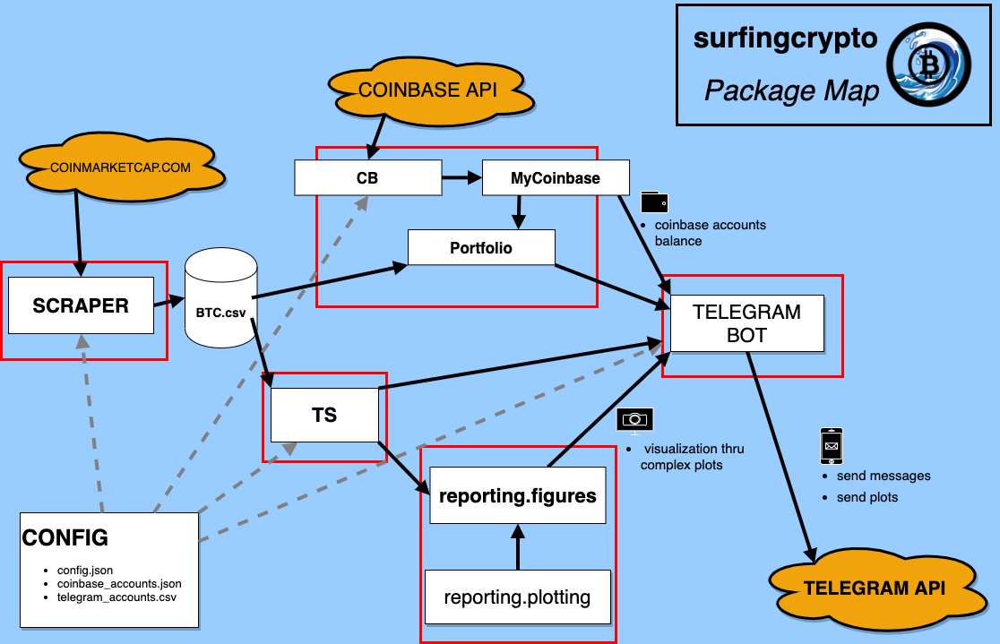

Quick start
The surfingcrypto package is built to follow the crypto price data and Coinbase portfolio data.
In order to follow the daily close prices and portoflio gain/loss, the package features a reporting module that offers plotting capabilities. The reporting.figures submodule contains the definition of various kind graphs, from candlesticks daily prices with technical analysis indicators to daily portfolio gain/loss plots.

It is possible to get historical price data on any cryptocurrency listed on coinmarketcap.com, such as BTC,ETH,ADA,MATIC, SOL.
The idea behind the package is to have a set of functions to produce daily reports, in form of plots and text. An example is as used as in main.py.
This script is run on a AWS ec2 istance, every day at 10:30 AM UTC. Paired with a notification system - I use Telegram - I get daily updates on my portfolio and coins that I want to monitor daily.
Key modules
The Portoflio object is the user Portfolio. Via the implemented APIs (at the moment, only Coinbase) get transaction history and tracks the portoflio live value, with gain/loss calculation.
The Scraper object gets the necesarriy data from coinmarketcap.com and stores data locally.
The TS object is implemented so to offer time-series calculation (TA Indicators, distance from ATH and other statistics) and easy access to the data as pandas.DataFrame objects or simple object attributes.
The surfingcrypto.reporting.figures module contains the definition of a series of plots that help visualize crypto prices and portfolio stock gain/loss and balance.
The folder examples containsa a series of examples that allows to experiment interactively with the repository capacities.
Basic usage
Configuration
The Config() class is used to pass the user configuration.
It requires to specify the location of the folder in which there is a config.json file, in which it is possible/required to specify the following parameters:
a
coinsdictionary containg the parametrization of Technical Analysis (eg. window of moving averages, RSI length, etc…).the API key to the Coinbase client.
Price data scraping
The Scraper gets the necesarriy data from coinmarketcap.com and stores data locally.
The data date ranges, required by both the portfolio and reporting module, are passed to Scraper via the Config object.
Reporting
The reporting structure is based on the production of graphs and by well-structured text.
Plotting prices and indicators
There following are the kind of plots that have been implemented.
SimplePlotSimple plot.candlesticks
volume
TaPlotTechnical Analysis plot.candlestick (with MA lines)
volume
MACD
Bollinger bands
RSI
ATHPlotDistance from ATH plotPortfolioPlotAll plots related to the user portfolio.CalendarPlotCalendar plot of a variable.
Most plots inherits from the same base object BaseFigure that has useful methods for working with matplotlib figures.
Reporting useful information
The reporting.reporting module is made of a set of methods, such as report_percentage_diff, that produce a well structured string with formatting to be easily read.
**ADA**
- 1d: 0.36 %
- 3d: -2.32 %
- 7d: 2.32 %
- 14d: 4.89 %
- 60d: -14.30 %
Ex: percentage difference for a set of different days.
Package modules structure
The following image depicts the package module structure and integration architecture.
TO BE UPDATED!
